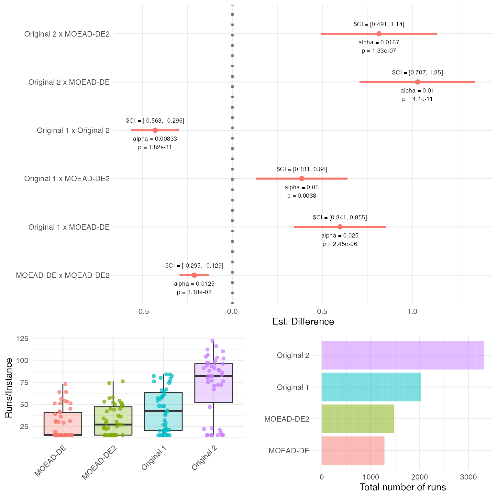
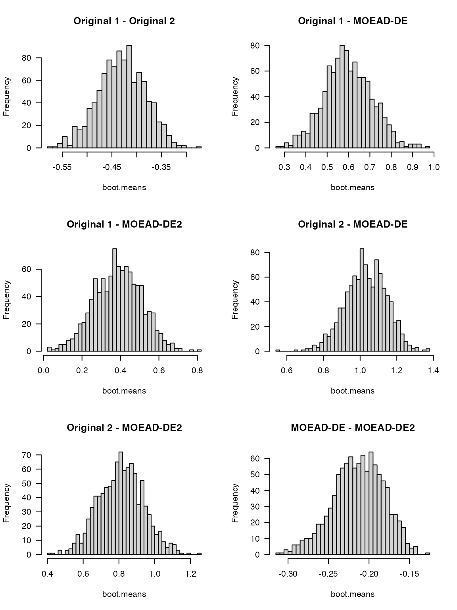
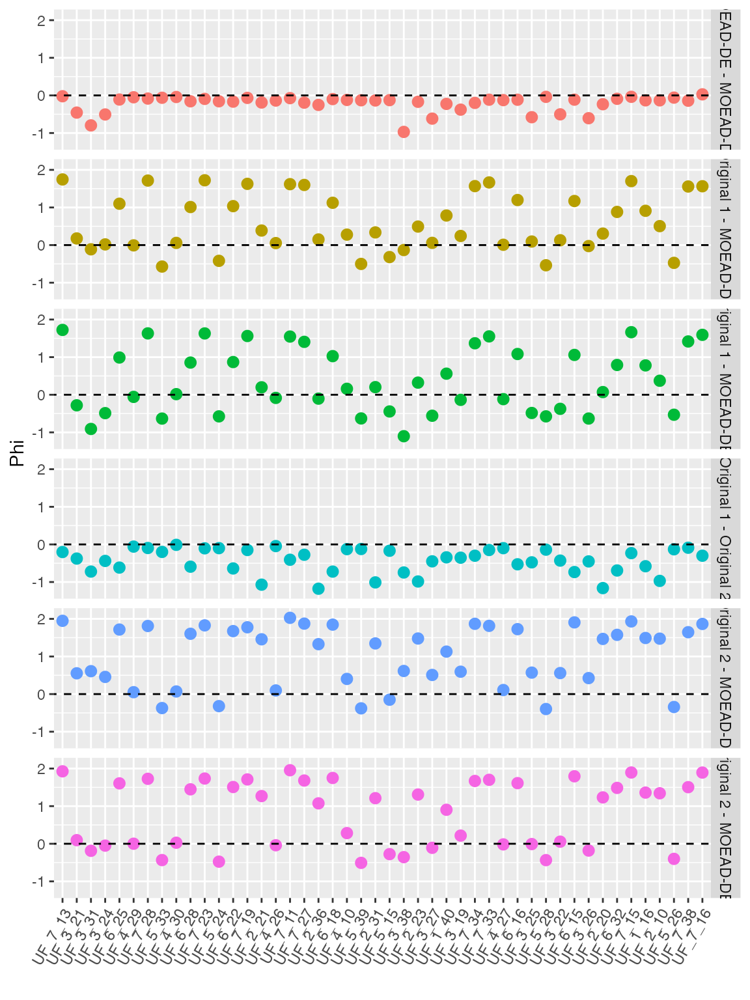

Adapting Algorithms for CAISEr
Felipe Campelo
2022-11-16
Source:vignettes/Adapting_Algorithm_for_CAISEr.Rmd
Adapting_Algorithm_for_CAISEr.RmdIntroduction
This is a short guide to adapting existing algorithms and problem instances for running an experiment using CAISEr. In this document, we cover:
- Definition of instance lists
- Adaptation of existing algorithms
- Some stuff you can do with the results
A general description of the CAISE methodology is available in our
papers: - F. Campelo, F. Takahashi, Sample size estimation for power
and accuracy in the experimental comparison of algorithms. Journal
of Heuristics 25(2):305-338, 2019.]
- F. Campelo, E. Wanner, Sample size calculations for the
experimental comparison of multiple algorithms on multiple problem
instances. Submitted, Journal of Heuristics, 2019.
Assembling an instance list
As stated in the documentation of both run_experiment()
and calc_nreps(), each instance must be a named list
containing all relevant parameters that define the problem instance.
This list must contain at least the field instance$FUN,
with the name of the problem instance function, that is, a routine that
calculates \(y = f(x)\). If the
instance requires additional parameters, these must also be provided as
named fields. Each instance can also have an alias, a
unique name to distinguish it from other instances. If no alias is
provided, the name of the function (instance$FUN) is used
as the instance ID.
The instances parameter for
run_experiment() is simply a list or vector of these
instance lists.
To illustrate how to adapt existing implementations to this
structure, we assume that we are interested in comparing four
multi-objective optimisation algorithms for a (hypothetical) problem
class represented by problems UF1 - UF7 (in dimensions between 10 and
40) from package smoof. For this
implementation to work with the moead() routine from the
MOEADr package (see next section) some manipulation is
necessary, but the instance list in this case is simply a list with each
element containing the name of the routine as field $FUN
(since all function names are different, no need for aliases).
# Install if needed
# devtools::install_github("fcampelo/MOEADr")
suppressPackageStartupMessages(library(smoof))
suppressPackageStartupMessages(library(MOEADr))
suppressPackageStartupMessages(library(CAISEr))
### Build function names (instances: UF1 - UF7, dimensions 10 - 40)
fname <- paste0("UF_", 1:7)
dims <- c(10:40)
allfuns <- expand.grid(fname, dims, stringsAsFactors = FALSE)
# Assemble instances list
instances <- vector(nrow(allfuns), mode = "list")
for (i in 1:length(instances)){
instances[[i]]$FUN <- paste0(allfuns[i,1], "_", allfuns[i,2])
}
### Build the functions listed above (so that they can be properly used)
for (i in 1:nrow(allfuns)){
assign(x = instances[[i]]$FUN,
value = MOEADr::make_vectorized_smoof(prob.name = "UF",
dimensions = allfuns[i, 2],
id = as.numeric(strsplit(allfuns[i, 1], "_")[[1]][2])))
}Adaptation of an existing algorithm implementation
We will use the MOEA/D implementation available in the MOEADr package as our base algorithm, and assume that we are interested in comparing the performance of four versions of this algorithm: the two versions described in the original MOEA/D paper, the one described in the MOEA/D-DE paper, and a variation of the MOEA/D-DE configuration that uses PBI as the aggregation function and calculates neighborhoods based on the space of parameters instead of on the scalarisation weight vectors (see the documentation of MOEADr and references therein for details of these methods) as solvers of the hypothetical problem class represented by the available test instances. The performance of each algorithm on each instance will be measured according to an indicator known as Inverted Generational Distance (IGD - details here), for which smaller = better.
As described in the documentation of both
run_experiment() and calc_nreps(), an
algorithm must contain an algorithm$FUN field
(the name of the function that calls the algorithm) and any other
elements/parameters that algorithm$FUN requires (e.g., stop
criteria, operator names and parameters, etc.). An additional field,
algorithm$alias, can be used to provide the algorithm with
a unique identifier.
Supposing that the list in algorithm has fields
algorithm$FUN = myalgo, algorithm$par1 = "a",
algorithm$par2 = 5, then the function in
algorithm$FUN must have the following structure:
myalgo <- function(par1, par2, instance, ...){
# do stuff
return(results)
}That is, it must be able to run if called as:
# remove '$FUN' and '$alias' field from list of arguments
# and include the problem definition as field 'instance'
myargs <- algorithm[names(algorithm) != "FUN"]
myargs <- myargs[names(myargs) != "alias"]
myargs$instance <- instance
# call 'algorithm$FUN' with the arguments in 'myargs'
do.call(algorithm$FUN, args = myargs)Finally, the algorithm$FUN routine must return a list
object containing (at least) the performance value of the final solution
obtained after a given run, in a field named value (e.g.,
result$value) .
To build the algorithm functions to be used in
run_experiment(), we encapsulate (almost) all algorithm
parameters within a myalgo() function, which receives only
two inputs: the instance to be solved (i.e., one element from
Instance.list) and the specification of which version of
the algorithm is to be run.
# Prepare algorithm function to be used in run_experiment():
myalgo <- function(type, instance){
# Input parameters:
# - type (variant to use: "original", "original2", "moead.de" or "moead.de2")
# - instance (instance to be solved, e.g., instance = instances[[i]])
# All other parameters are set internally
## Extract instance information to build the MOEADr problem format
fdef <- unlist(strsplit(instance$FUN, split = "_"))
uffun <- smoof::makeUFFunction(dimensions = as.numeric(fdef[3]),
id = as.numeric(fdef[2]))
fattr <- attr(uffun, "par.set")
prob.dim <- fattr$pars$x$len
## Build MOEADr problem list
problem <- list(name = instance$FUN,
xmin = fattr$pars$x$lower,
xmax = fattr$pars$x$upper,
m = attr(uffun, "n.objectives"))
## Load presets for the algorithm provided in input 'type' and
## modify whatever is needed for this particular experiment
de2 <- FALSE
if (type == "moead.de2"){
de2 <- TRUE
type <- "moead.de"
}
algo.preset <- MOEADr::preset_moead(type)
algo.preset$decomp$H <- 99 # <-- set population size
algo.preset$stopcrit[[1]]$name <- "maxeval" # <-- type of stop criterion
algo.preset$stopcrit[[1]]$maxeval <- 2000 * prob.dim # stop crit.
poly.ind <- which(sapply(algo.preset$variation,
function(x){x$name == "polymut"}))
algo.preset$variation[[poly.ind]]$pm <- 1 / prob.dim # <--- pm = 1/d
if (de2){
algo.preset$aggfun$name <- "pbi"
algo.preset$aggfun$theta <- 5
algo.preset$neighbors$name = "x"
}
## Run algorithm on "instance"
out <- MOEADr::moead(preset = algo.preset, problem = problem,
showpars = list(show.iters = "none"))
## Read reference data to calculate the IGD
Yref <- as.matrix(read.table(paste0("./inst/extdata/pf_data/",
fdef[1], fdef[2], ".dat")))
IGD = MOEADr::calcIGD(Y = out$Y, Yref = Yref)
## Return IGD as field "value" in the output list
return(list(value = IGD))
}Finally, the algorithms parameter must be assembled as a
list of algorithm objects (each containing fields $FUN,
$alias and, in this case, $type).
# Assemble Algorithm.list. Notice that we need to provide an alias for each
# method, since both algorithms have the same '$FUN' argument.
algorithms <- list(list(FUN = "myalgo",
alias = "Original 1",
type = "original"),
list(FUN = "myalgo",
alias = "Original 2",
type = "original2"),
list(FUN = "myalgo",
alias = "MOEAD-DE",
type = "moead.de"),
list(FUN = "myalgo",
alias = "MOEAD-DE2",
type = "moead.de2"))Running an experiment using CAISEr
With the definitions above it is possible now to run an experiment
using the iterative sample size determination implemented in CAISEr. For
that, all we have to do is define the desired experimental parameters
and use run_experiment().
IMPORTANT NOTICE: running this experiment takes a
while (about 4 hours in a 3.6 GHz Intel Core i7 iMac with 16Gb RAM,
using 7 cores). If you want a (much) faster example, check the
documentation of run_experiment().
my.results <- run_experiment(instances = instances,
algorithms = algorithms,
power = 0.8, # Desired power: 80%
power.target = "mean", # on average,
d = 0.5, # to detect differences greater
# than 0.5 standard deviations
sig.level = 0.05, # at a 95% confidence level.
se.max = 0.05, # Measurement error: 5%
dif = "perc", # on the paired percent
# differences of means,
method = "param", # calculated using parametric
# formula.
comparisons = "all.vs.all", # Compare all algorithms
# vs all others,
nstart = 15, # start with 15 runs/algo/inst
nmax = 200, # and do no more than 200 runs/inst.
seed = 1234, # PRNG seed (for reproducibility)
#
# NOTICE: Using all but 1 cores. Change if needed
ncpus = parallel::detectCores() - 1)After that we can interrogate the results and perform inference, if
we are so inclined. But first, CAISEr provides a useful plot function
for the output of run_experiment(). Let’s try it (type
?plot.CAISEr for details):
plot(my.results)
We can also check if all paired differences in performance are (at least approximately) Normal, so that we can assume a Normal sampling distribution of the means and use t-tests without much worry:
suppressPackageStartupMessages(library(car))
algopairs <- paste(my.results$data.summary$Alg1,
my.results$data.summary$Alg2,
sep = " - ")
par(mfrow = c(3, 2))
for (i in seq_along(unique(algopairs))){
tmp <- my.results$data.summary[algopairs == unique(algopairs)[i], ]
car::qqPlot(tmp$Phi,
pch = 16, las = 1, main = unique(algopairs)[i],
ylab = "observed", xlab = "theoretical quantiles")
}
The normal QQ plots indicate some deviation from normality, with the
MOEA/D-DE vs. MOEA/D-DE2 comparison having a
particularly longer left tail. We can check visually the effect of this
in the sampling distribution of the means:
par(mfrow = c(3, 2))
for (i in seq_along(unique(algopairs))){
tmp <- my.results$data.summary[algopairs == unique(algopairs)[i], ]
boot.means <- CAISEr::boot_sdm(tmp$Phi, boot.R = 999)
hist(boot.means, breaks = 30, main = unique(algopairs)[i], las = 1)
}
The deviations does not seem to be too severe, but are enough to justify using a nonparametric alternative (e.g., Wilcoxon’s Rank-Sum tests) instead of the t-test. This will sacrifice a little power for borderline cases (i.e., comparisons where the actual effect size is close to the value of \(d^*\) used in the design of the experiment), but give us more confidence in the comparisons that end up being statistically significant.
Some other graphical analysis can be quite informative:
df <- cbind(Comparison = algopairs, my.results$data.summary)
suppressPackageStartupMessages(library(ggplot2))
mp <- ggplot(df, aes(x = Comparison, y = Phi, fill = Comparison))
mp +
geom_violin(alpha = 0.6, show.legend = FALSE, scale = "width") +
geom_boxplot(alpha = 0, show.legend = FALSE,
outlier.shape = NA, width = .15) +
geom_point(shape = 16, col = "black", fill = "black", alpha = 0.6,
position = position_jitter(width = .15)) +
geom_abline(slope = 0, intercept = 0, col = "red", lty = 2) +
ylab("Percent difference in IGD") + xlab("") +
theme(axis.text.x = element_text(angle = 45, hjust = 1))Recall first that smaller = better for the quality
indicator used in this experiment. Looking at the plot above shows that
the differences between all pairs of algorithms were quite high - e.g.,
differences of up to 200% in the case of the Original 2
versus both MOEA/D-DE versions. In general both MOEA/D-DE
versions seem to generate better (lower) IGD values than the
Original versions, and MOEA/D-DE seems
generally better than MOEA/D-DE2 (first comparison to the
left. Also, the variability seem to be reasonably high for all
comparisons.
We can also visualise the individual estimates (with their standard errors):
ggplot(df, aes(x = Instance, y = Phi, colour = Comparison,
ymin = Phi - SE, ymax = Phi + SE)) +
geom_pointrange(show.legend = FALSE) +
geom_abline(slope = 0, intercept = 0, col = 1, lty = 2) +
facet_grid(Comparison ~ .) +
theme(axis.text.x = element_text(angle = 60, hjust = 1)) +
xlab("")
Notice that the standard errors of the estimators are in most cases smaller than the marker used for the point estimate. Also notice that the observations fall, for each comparison, mainly on one side of the zero-line, which is an almost sure indicator that the comparisons will be statistically significant.
Finally, we can examine our hypothesis tests. The
summary method of class CAISEr already outputs
the desired information:
summary(my.results, test = "wilcoxon")## #====================================
## CAISEr object:
## Number of instances sampled: 46
## Number of instances required: 46
## Adequate power: TRUE
## Total runs of Original 1 : 1281
## Total runs of Original 2 : 1472
## Total runs of MOEAD-DE : 2020
## Total runs of MOEAD-DE2 : 3317
## #====================================
## Pairwise comparisons of interest:
## Test: wilcoxon
## H1: two.sided
## Comparisons: all.vs.all
## Alpha (FWER): 0.05
## Power target: mean
## Desired power: 0.8
## #====================================
## Tests using Holm's step-down procedure:
##
## Test 1 : Original 1 x Original 2
## H0: median = 0
## alpha = 0.008333
## p-value = 2.842e-14
## Est. median = -0.4038
## CI{1-alpha} = [ -0.5658 -0.2688 ]
## d = -1.310538
##
## Test 2 : MOEAD-DE x MOEAD-DE2
## H0: median = 0
## alpha = 0.01
## p-value = 8.527e-14
## Est. median = -0.1487
## CI{1-alpha} = [ -0.2879 -0.111 ]
## d = -0.9829994
##
## Test 3 : Original 2 x MOEAD-DE
## H0: median = 0
## alpha = 0.0125
## p-value = 4.791e-10
## Est. median = 1.033
## CI{1-alpha} = [ 0.7269 1.47 ]
## d = 1.270841
##
## Test 4 : Original 1 x MOEAD-DE
## H0: median = 0
## alpha = 0.01667
## p-value = 9.02e-06
## Est. median = 0.5934
## CI{1-alpha} = [ 0.2504 0.8769 ]
## d = 0.7954248
##
## Test 5 : Original 2 x MOEAD-DE2
## H0: median = 0
## alpha = 0.025
## p-value = 1.396e-05
## Est. median = 0.7765
## CI{1-alpha} = [ 0.5863 1.194 ]
## d = 0.9214111
##
## Test 6 : Original 1 x MOEAD-DE2
## H0: median = 0
## alpha = 0.05
## p-value = 0.01257
## Est. median = 0.4054
## CI{1-alpha} = [ 0.1109 0.6285 ]
## d = 0.4501527
## #====================================All differences were found to be different at the \(95\%\) joint significance level.
Finally, the full data of the experiment is contained in other fields
of the output list my.results, and the user is encouraged
to explore these. It is possible, for instance, to can generate box
plots and confidence intervals on the mean performance of each algorithm
on each sampled instance, which can inspire new questions for the
researcher.